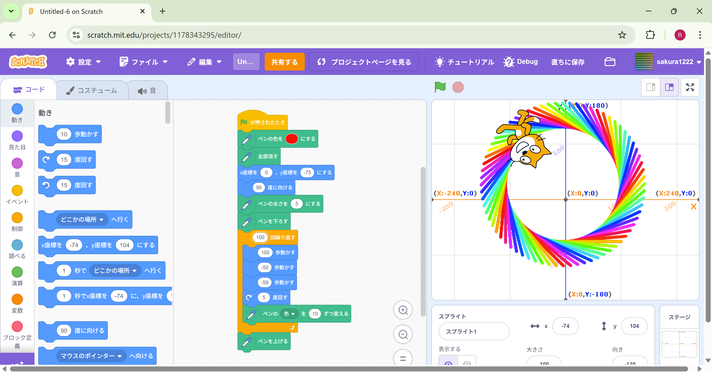
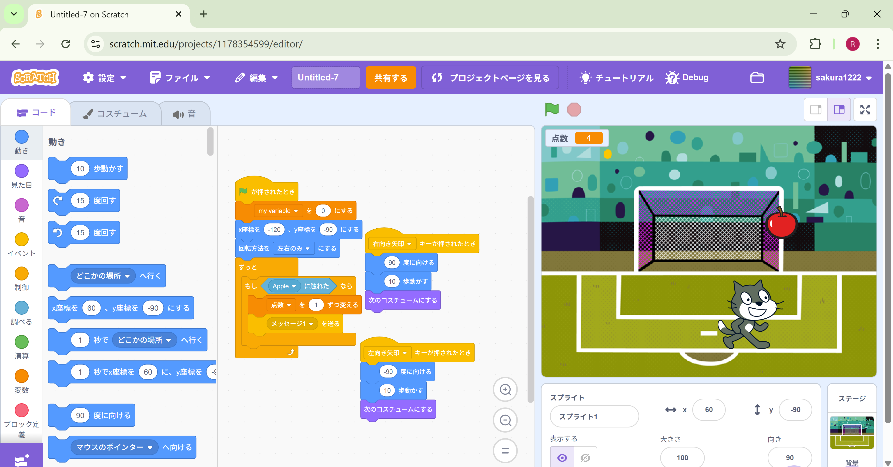

1週目のレポート ： 公大高専１年実習I-1
3a班17番 あき
第1週目
1-1 サイエンスアート

1.内容
拡張機能であるペン機能を使い、サイエンスアートを作成した。
少しずらしてから、円を描き、色をちょっとづつ変えることで、奇妙なドーナツを作ってみました。
中心に戻すことなく円を描かせることでできた形です。
2.感想
中学生から触っていたscratchだったので私は簡単に思えましたが、忘れていたこともちょろっとあったので
覚えなおすのにいい機会だなと思いました。
1-2 ゲーム

1.内容
これは、落ちていたリンゴを猫でキャッチするゲームです。キャッチするごとに
1点を獲得できます。
2.感想
1度大阪公立大学工業高等専門学校の体験入学のときに
同じことをしたので、楽だと感じました。
ただ、久しぶりに触ったので覚えてないところがあり、
改めて知るきっかけになりました。
1-3 ホームページ作成
私のホームページ
1.内容
GitHubを使ったWebデザインについて学びました。
学んだWebデザインの方法を使い毎週のレポートを書き込み
ネット上に公開するというこを学んだ。 2.感想
私は、VScodeでしかＷｅｂデザインをしたことがなく全くではないですけど
別のものを触ったことでいろんな方法があるんだなと思いました。
各ページへのリンク
1週目のレポート
2週目のレポート
3週目のレポート
私のホームページ